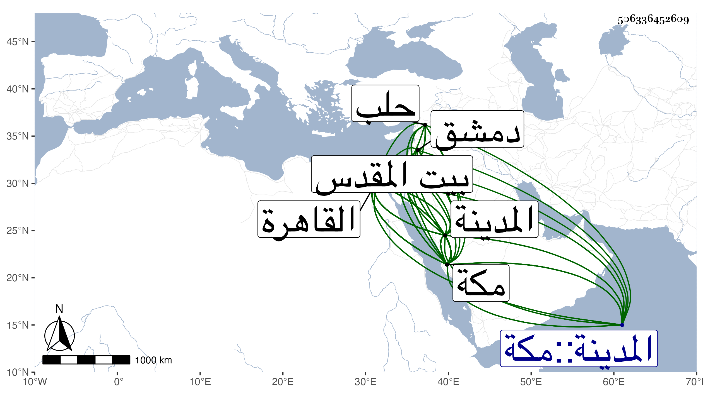

0902Sakhawi.DawLamic.ITO20230111-ara1.EIS1600.506336452609
Biography ID: 506336452609
718
محمد النجم أبو المعالي بن النجم بن ظهيرة والد عبد القادر الماضي وأخو الذي قبله وأمه رابعة ابنة الخواجا داود بن علي الكيلاني . ولد بمكة بعد وفاة أبيه بسبعة وثلاثين يوما في آخر يوم السبت رابع شعبان سنة ست وأربعين وثمانمائة فخلفه في اسمه ولقبه وكنيته ونشأ فحفظ القرآن وأربعي النوي ومنهاجه وجمع الجوامع والجرومية وألفية النحو والعوامل والبصروية والتلخيص والتهذيب في المنطق للتفتازاني وعرض علي جمع من المكيين والواردين عليها كالزين الأميوطي والبرهان الزمزمي وابن عمه البرهان بن ظهيرة وابن عمه الآخر المحب بن أبي السعادات وفاته العرض على أبي السعادات فإنه وإن عرض في سنة إحدى وستين كان القاضي مشتغلا في أولها بالتوعك بحيث مات في صفرها ، هذا مع أن النجم توغك أيضا بحيث لم ينته حفظه لكتبه إلا في سنة ست وستين ، والتقي بن فهد والمحيوي عبد القادر المالكي المكيين والشهاب الشوائطي بل ظنا قرأ عليه جميعها فهو الذي كان يصحح لوحه عليه وأبي الفضل المغربي والشهاب بن الدقاق المصري والمحيوي الطوخي والشهاب بن قرا والشريف التاج عبد الوهاب الحسيني والزين خطاب الدمشقيين وتدرب بالأخير في العربية فإنه كان يلقنه من مقدمة شيخه الشمس البصروي فيها درسا درسا ولا ينتقل عنه حتى يحفظه وكذا حضر دروسه في الحاوي الصغير وغيرهما والشهاب بن يونس وأخذ عنه أيضا في مختصر ابن الحاجب الأصلي وغيره والعربية فقط عن أبي القسم البجائي وعن الهواري المغربيين ولازم فيها عبد القادر المالكي وكثر انتفاعه به وبتهذيبه وظهرت آثاره فيه وهي مع المنطق عن مظفر الطبيب وتلميذه النيسابوري إمام الحنفية البخاري بالإذن له وكذا لازم إمام الكاملية حتى بحث عليه في المنهاج الفرعي وتلقن منه الذكر ولبس منه الخرقة وقرأ عليه الشفا وبعض الصحيح وغير ذلك وسلام الله الكرماني في المنهاج الأصلي وشهد بعض دروس عمه أبي السعادات في الفقه وغيره وسمع عليه وأكثر من ملازمة ابن عمه البرهان في دروسه الفقهية والحديثية والتفسيرية وارتحل معه إلى القاهرة في سنة ثمان وسبعين وبانفراده قبلها في سنة ست وسبعين وأخذ فيهما عن العبادي والبكري في الفقه وكذا عن زكريا والجوجري وأكثر من ملازمته في الفقه وأصوله وكذا من ملازمة الكافياجي في فنون متعددة وعن التقي الحصني المختصر وعن النظام الحنفي في التوضيح وغيره من كتب العربية وكذا أخذ فيها عن السنهوري وسمع على السيف الحنفي قطعة من شرح الألفية لابن عقيل وقرأ عليه بعض الشفا وزار المدينة النبوية وأخذ بها في الفقه عن الشهاب الأبشيطي وأذن له غير واحد في الإفتاء والتدريس حسبما كتبت عبارة جمهورهم في التاريخ الكبير ، وسمع على عمه أبي السعادات وأبي الفتح المراغي والشوائطي والتقي بن فهد وإمام الكاملية وزينب الشوبكية في آخرين بمكة والشهاب الشاوي والزين عبد الصمد الهرساني والزكي المناوي ونشوان في آخرين ممن تقدم وغيرهم بالقاهرة وأبي الفرج المراغي وغيره بالمدينة ، وأجاز له خلق منهم شيخنا والعيسى وسعد الديري وابن الفرات وسارة ابنة ابن جماعة والصالحي والرشيدي والتاج الشاوي والسراج عمر القمني والكمال بن البارزي والزين بن عياش والسراج عبد اللطيف الفاسي والبدر حسين بن العليف وأبو اليمن النويري والمحب المطري وأبو الفتح بن صلح في آخرين من الحرمين وبيت المقدس والقاهرة ودمشق وحلب وغيرها كأبي جعفر بن العجمي والضياء بن النصيبي والتقي أبي بكر القلقشندي والجمال بن جماعة ولازمني بمكة في سنتي ست وسبع وثمانين حتى حمل عني من تصانيفي وغيرها شيئا كثيرا دراية كشرحي لألفية العراقي ورواية وحصل بعض تصانيفي وكتبت له إجازة حافلة أودعت الكثير منها في الكبير ونعم الرجل فضلا وتفننا وتحريا وصفاء وبهاء واهتماما بوظائف العبادة وانجماعا عن الناس وإتقانا لكثير مما يتحفظه ويبديه وتكررت زيارته المدينة النبوية وتزوج بها ابنة الفخر العيني بل كان بالقاهرة في سنة سبع وتسعين فلما وقع الطاعون فر في البحر مع الفارين إلى المدينة ثم إلى مكة ثم رجع وهو الآن سنة ثمان وتسعين وعاد منها في موسمها وأقام بمكة التي تليها .
